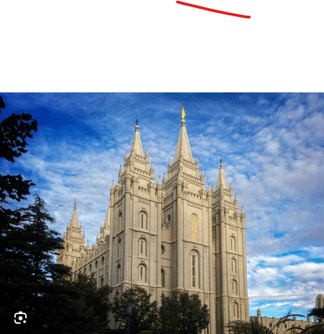
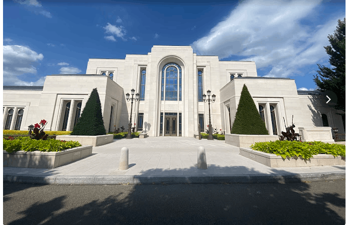

Temple Gallery
Exploring sacred spaces around the world

Salt Lake Temple
Salt Lake City, Utah
Washington D.C. Temple
Kensington, Maryland
San Diego Temple
San Diego, California
Rome Italy Temple
Rome, Italy
Hong Kong Temple
Kowloon, Hong Kong

Paris France Temple
Le Chesnay, France
Rio de Janeiro Temple
Rio de Janeiro, Brazil
London England Temple
Surrey, England
Tokyo Japan Temple
Tokyo, Japan